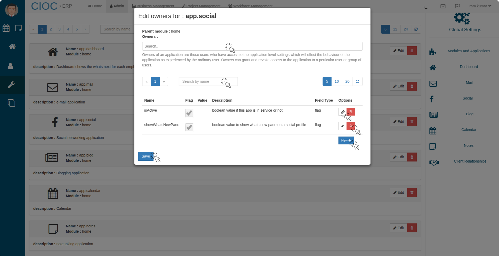

Admin¶
Admin Home.
In this tab you can see the graphical representation of Average Expense Per Project, Average Revenue Per Project, Employee Tenure, Employee Growth, Expenses.
Manage user¶
Manage Users
Above image is giving you a overview of admin portal. here admin is getting the access to manage user, setting and Disbursal.
- Click on Search field to search the user profile (by username).
- Click on New+ button to create a new user. you will see a form like below, fill the details accordingly and click on save button and user will be created. you can see them in Admin > manage Users.
Edit User Profile¶
Editing user profile.
Click on the pencil icon of that user whom account you want to edit. There is server details about the user in which most of them can be mange by the Admin, let’s see in the above image.
- In the above [portal admin can change the user’s Employee Id, Employment Type, Prefix, Gender, Marital status, Date of Birth, Local Address, Permanent Address, Blood Group, Mobile, Email, Emergency Contact Name and Emergency Contact Number too.
- And after updating (changing) the details click on Save button to save the changes. then
- Click on Next button to save and manage the further details.
In the above portal edit user’s Doctorate University, Father’s Name, Mother’s Name and Notes then click on Save and then on Next button. then you will see the below tab
- Here you can manage users files like Display Picture, TNC and Bond, Resume, Certificates, Transcripts, Other Docs, Aadhar Card, Aadhar Card, Vehicle Registration, Appointment Acceptance, PAN etc.
- Then click on Save button and changed details will be updated.
Edit Payroll for user¶
Edit Payroll
Click on Card icon to edit the payroll for That user then you will see the above tab.
- where Admin can manage many details like HRA (House Rent Allowance), Special Allowance, LTA(Leave Travel Allowance), Basic, Tax Slab, AdHOC and Medical insurance details, Leaves, Joining Date, Last Working Date, either Saturday Off or Not, Bank Details etc.
- The click on Save button to save all the changes.
Edit Designation For User¶
Edit Designation and KRA
In above tab admin can manage the user’s designation and KRA(Key result area).
- Here admin can manage several details related to user’s designation like Reporting To, HR Partner, Primary Approver, Secondary Approver, Division, Unit, Department, Roles and then click on save button it will save all the changes done in this tab.
- Admin can also manage the KRA(Key result area) of that user by KRA name, target and Period and click on save KRA button to save.
Edit Permission For User¶
Edit Permission
Editing Permission for any user is very simple just search their profile by their name and then click on Key icon button and you will see the above tab here
- Click on the search field and type the name of that area(module) which you to allow for that user it will be appear then select and save.
- Like this that user will be able to access that area for example in the above tab user(Riya) has access for only one module that is showing in Grant application access
- If you(admin) want to deny that access area for that user just click on x icon of that area and that module will be disappear from that user portal.
Edit master Data For User¶
Edit Master Data
To Edit the Master data for any user click on the Lock icon appear on that user profile as you had done for Edit Permission then you will see the above tab
- There you can change the User’s First Name, Last Name, Password and in the right side There is two checkbox one is for Active and another is for Staff if that user is Active then this checkbox will be checked by itself or you can make it check to make active that user
- If that user is Staff then the staff labeled checkbox will be checked or you want to make that user staff click on this checkbox and make it checked.
- To Access any user’s account without knowing their password, admin can access that user account, for that admin has to search and select the user profile, click on lock icon then click on Generate Passkey passkey will be generated near label password, as you click on generate Passkey Button, it show a message copied to clipboard and Now just open a new tab in your browser and paste the copied link in the address bar now you will be logged in from that user account.
Note
The copied link will be like https://domainname/tlogin//?token=BokOoXZxFdMjgXem2#@t .
How to chat with User¶
To chat with user just search their profile by their name, then click on message icon, chat box will be open in the right side corner of the window and like this admin can message any user.
View User Profile¶
User Details
Go to Admin > Manage User > then Search and select User > View profile then you will see above details about that user.
Settings¶
Settings on admin portal
From the above portal admin can manage most part of this website like Modules And Application, dashboard, Mail, Social, Blog, Calendar, Notes and Client relationships.
Modules And Applications¶
Manage Modules and Applications.
In the above tab you can…
- Search module and application by their name in search bar.
- Click on that module to know (description)about them.
- Click on delete icon to delete that module or application and by clicking on yes give the confirmation to delete that module and application.
- You can add new field by clicking on New+.
- If you want to edit click on edit of that application.

Here you can change the owner for that application
- You can search the created application(by name) in search bar.
- You can Delete and Edit that application field. if you click on edit you will see
Here you can change the Description and Field Type of that field in application and click on save icon to save the changes.
Note
- Above setting works for every modules and applications.
Blog Settings¶
In the blog setting area you can configure your blog tab. like
- you can set Service Name, Tag Line, Copyright Name.
- You can also provide your Fb Link, Twitter Link, Linked In Link and your website URL too in your blog.
- You can set the heading1 (first heading on the main page) and haeding2 (second heading on the main page (shown in small font)).
- you can also show the Articles Count (number of available articles as written in the search input).
- to show advertisement on your blog check the showAdvertisement ? checkbox and fill the Advertisement U R L and Advertisement Image U R L.
- To add a search field in your blog check the showSearchInHeader ? checkbox.
- you can also add new tag( search input on the header) just fill in add a new tag section and click on ADD button
- and click on save button and all the changed settings will be saved for Blog.
Calendar(admin)¶
Creating Holidays
In calendar setting you can Create holiday which will be shown in calendar as per date.
- Fill the Name of holiday then
- select the type of holiday
- Set the date of that holiday and click on Create button
- and it will be appear in holiday list.
Client Relationships settings¶

In this setting you can customize Tnc Quotation, Tnc Invoice, Company Name, Company Address, Contact Details, Bank Details and Regulatory Details.
- Just change and click on save button to save these changed settings.
Disbursal¶
Disbursal History
To check the Disbursal go to Admin > Disbursal then
- Click on toggle button to check the History and Pending
- Here you can check in which date?, for which purpose?, how much amount? has been disbursed to whom?, and in which account?
- And in Pending table you will get the same information about Disbursal but that disbursal is not approved by anyone that’s why those are in pending.
Pending Disbursal
To proceed the disbursal go to Admin > Disbursal > Pending then
- select the verified row which you have to disburse and Click on Done.
Disbursal Process
In the above tab write the Disbursal note and select the Account from which it will be deducted and click on save button.
- Then those list will be added in disbursal history.
- Theses lists are just an list in which it is mentioned that for what purpose? payment will be done from where?.
- In this table data comes from several part of this system like Advance pay, Loan, Vendor invoice and Salary Payslip.
- So any disbursal of company will be added in this list automatically.
- The done Disbursal, Pending and processed list can be downloaded from current tab by clicking on Download button.
- The downloaded data will be in excel sheet.